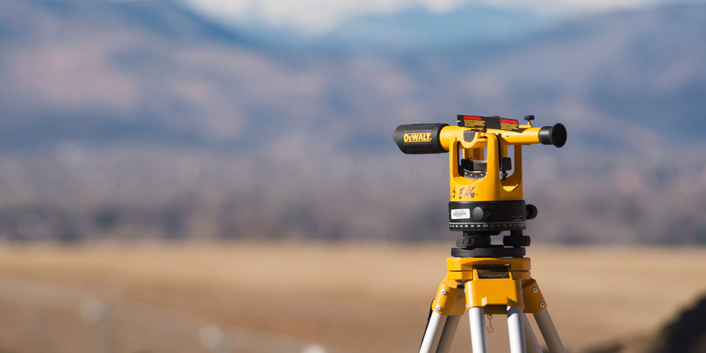

<!DOCTYPE html>
<html>

<head>
    <meta charset="utf-8">
    <link type="text/css" rel="stylesheet" href="style.css">
    <title>Mērniecība - Zemesgabalu robežu uzmērīšana zemes un būvju reģistrācijai</title>
</head>

<body>
    <header class="main-header" id="to-top">
        <div class="container">
            
            <nav class="main-nav language-nav flr">
                <a href="#">RU</a>
                <a href="#">EN</a>
            </nav>
            <!-- /.language-nav -->
            <nav class="main-nav flr">
                <a href="#to-top">Sākums</a>
                <a href="#services">Pakalpojumi</a>
                <a href="#about-us">Par mums</a>
                <a href="#clients">Klienti</a>
                <a href="#contacts">Kontakti</a>
            </nav>
            <!-- /.main-nav -->
        </div>
    </header>
    <section class="slideshow">
        <div class="slideshow-inner">
            <div class="site-intro">
                <h1>Mērniecība</h1>
                <p>Zemesgabalu robežu uzmērīšana
                    <br>zemes un būvju reģistrācijai</p>
            </div>
            <a href="#" class="arrow arrow-left"><i class="sprite-left-arrow"></i></a>
            <a href="#" class="arrow arrow-right"><i class="sprite-right-arrow"></i></a>
            <ul class="pager">
                <li><a href="#">1</a></li>
                <li class="active"><a href="#">2</a></li>
                <li><a href="#">3</a></li>
            </ul>
        </div>
        <div class="slide-container">
            
            
            
        </div>
    </section>
    <!-- /.slideshow -->
    <section class="services">
        <div class="container">
            <div class="anchor" id="services"></div>
            <h1 class="section-header">Pakalpojumi</h1>
            <div class="row">
                <div class="col-3">
                    <h2>Ģeodēzija</h2>
                    <ul>
                        <li>Topogrāfiskā uzmērīšana un plānu izgatavošana mērogā 1:250, 1:500, 1:1000, 1:2000;</li>
                        <li>Apakšzemes komunikāciju uzmērīšana un saskaņošana;</li>
                        <li>Situācijas uzmērīšana;</li>
                        <li>Būvasu nospraušana;</li>
                        <li>Konstrukciju novietojuma pārbaude.</li>
                    </ul>
                </div>
                <div class="col-3">
                    <h2>Mērniecība</h2>
                    <ul>
                        <li>Zemesgabalu robežu uzmērīšana zemes un būvju reģistrācijai;</li>
                        <li>Zemesgabalu robežu noteikšana dabā;</li>
                        <li>Atkārtota robežpunktu koordinātu noteikšana un atlikšana dabā;</li>
                        <li>Zemesgabalu apvienošana vai sadalīšana dabā, pēc zemes ierīcības projekta vai detālplānojuma izstrādes.</li>
                        <li>Meža transformējamo platību uzmērīšana;</li>
                        <li>Robežstigu un vizūru noteikšana;</li>
                        <li>Zemesgabalu apgrūtinājumu, robežu un situācijas plānu izgatavošana.</li>
                    </ul>
                </div>
                <div class="col-3">
                    <h2>Zemes ierīcība</h2>
                    <ul>
                        <li>Zemes ierīcības projektu izstrāde;</li>
                        <li>Zemes ierīcības projektu saskaņošana.</li>
                    </ul>
                </div>
            </div>
            <!-- /.row -->
        </div>
    </section>
    <!-- /.services -->
    <section class="prices">
        <div class="container">
            <h1 class="section-header">Pakalpojumu Izcenojumi</h1>
            <div class="row">
                <div class="col-2">
                    <p>Par topogrāfiskās informācijas izsniegšanu (tajā skaitā ielu sarkano līniju), pieņemšanu, pārbaudi, ievadīšanu datu planšetēs, ievadīšanu datubāzē, reģistrēšanu un nosūtīšanu pašvaldībai:</p>
                    <table class="table">
                        <thead>
                            <tr>
                                <th>Pakalpojums</th>
                                <th>EUR</th>
                            </tr>
                        </thead>
                        <tbody>
                            <tr>
                                <td>pie objekta platības līdz 0.3 ha (ieskaitot), viens objekts</td>
                                <td>21,34</td>
                            </tr>
                            <tr>
                                <td>pie objekta platības virs 0.3 ha līdz 0.5 ha (ieskaitot), viens objekts</td>
                                <td>24,19</td>
                            </tr>
                            <tr>
                                <td>pie objekta platības virs 0.5 ha līdz 1.0 ha (ieskaitot), viens objekts</td>
                                <td>31,30</td>
                            </tr>
                            <tr>
                                <td>pie objekta platības virs 1.0 ha, papildus par katru nākamo ha,bet ne vairāk kā 135.17 EUR kopā par vienu objektu</td>
                                <td>10,67</td>
                            </tr>
                        </tbody>
                    </table>
                    <p class="note">objektos, kuros ir 2 (divas) vai mazāk apakšzemes komunikācijas,tāmei tiek piemērots koeficients 0.8</p>
                </div>
                <!-- /.col-2 -->
                <div class="col-2">
                    <p>Par topogrāfiskās informācijas izsniegšanu (tajā skaitā ielu sarkano līniju), pieņemšanu, pārbaudi, ievadīšanu datu planšetēs, ievadīšanu datubāzē, reģistrēšanu un nosūtīšanu pašvaldībai:</p>
                    <table>
                        <thead>
                            <tr>
                                <th>Pakalpojums</th>
                                <th>EUR</th>
                            </tr>
                        </thead>
                        <tbody>
                            <tr>
                                <td>pie trases garuma līdz 300 m, viens objekts</td>
                                <td>21,34</td>
                            </tr>
                            <tr>
                                <td>pie trases garuma virs 300 m, papildus par katriem nākamajiem 100 m, bet ne vairāk kā 135.17 EUR kopā par vienu objektu</td>
                                <td>24,19</td>
                            </tr>
                            <tr>
                                <td colspan="2">Par vienreizēju topogrāfiskās informācijas sagatavošanu un izsniegšanu digitālā formā (objekta platība tiek noteikta pa pieprasīto kontūru):</td>
                            </tr>
                            <tr>
                                <td>objekta platība līdz 25ha (ieskaitot), viens objekts</td>
                                <td>2,85</td>
                            </tr>
                            <tr>
                                <td>objekta platība virs 25ha, papildus par katru nākamo ha</td>
                                <td>0,07</td>
                            </tr>
                        </tbody>
                    </table>
                </div>
                <!-- /.col-2 -->
            </div>
            <!-- /.row -->
        </div>
        <!-- /.container -->
    </section>
    <!-- /.prices -->
</body>

</html>